Lapa and the Selarón Steps: Breakfast on Rua do Lavradio, then on foot through Lapa: Bob Marley graffiti, the Arcos da Lapa and the Selarón Steps – 215 steps that the Chilean artist Jorge Selarón covered from 1990 with more than 2,000 tiles from over 60 countries.
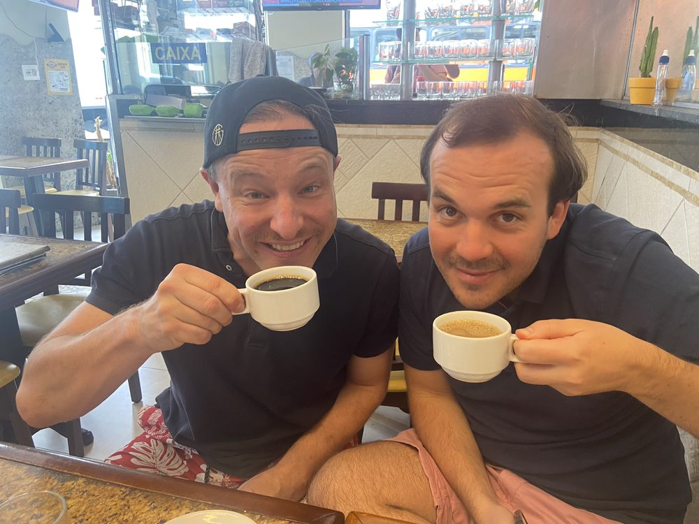
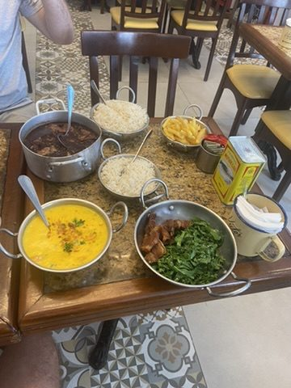
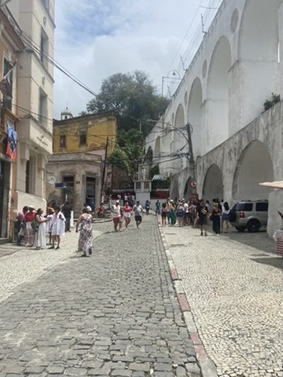
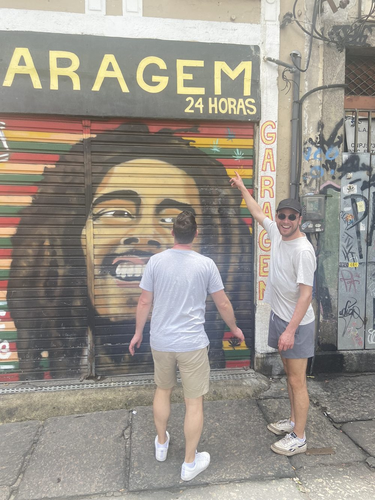
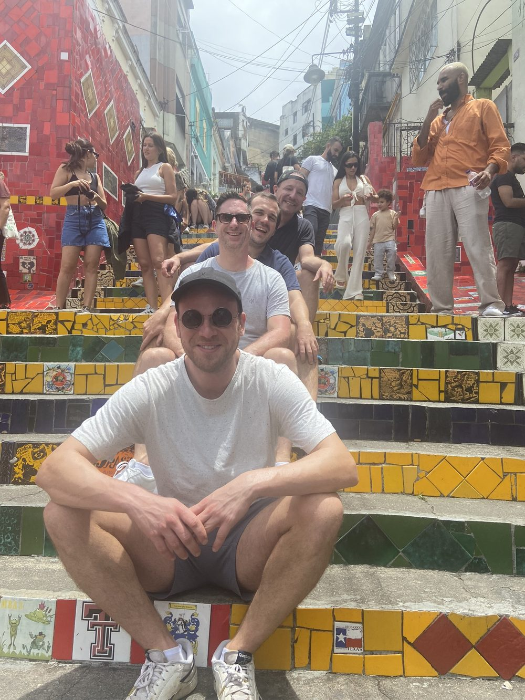
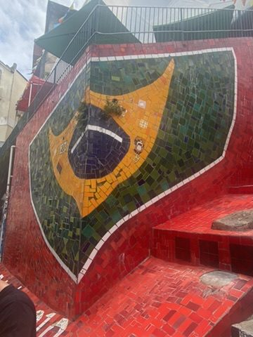
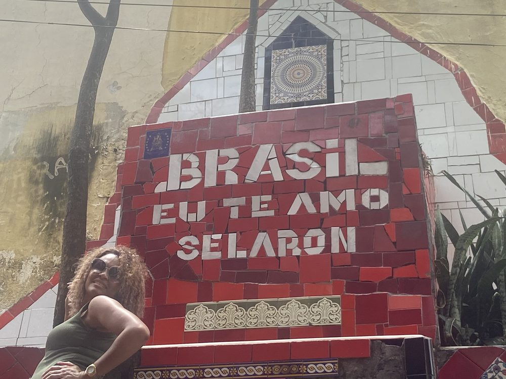
Metropolitan Cathedral: From outside a concrete cone, 75 m high, built between 1964 and 1979 – inside, a surprise: four stained-glass windows rise 64 m from floor to the cross in the roof. Up to 20,000 people fit inside standing.
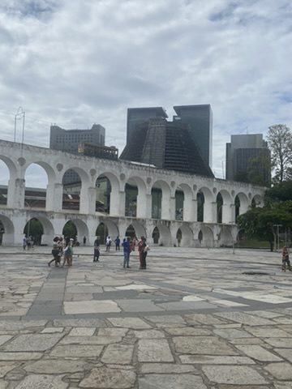
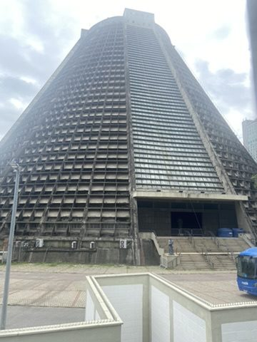
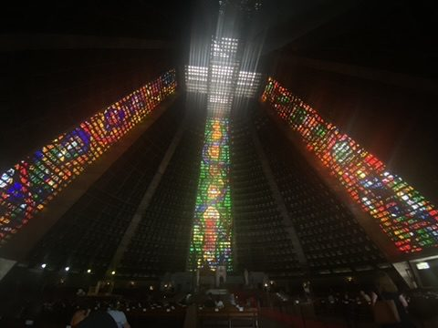
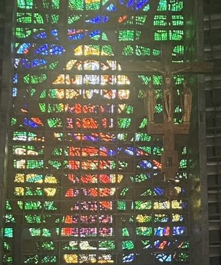
Sambódromo: Oscar Niemeyer designed the samba schools' parade ground on Rua Marquês de Sapucaí, opened in 1984. Outside Carnival it is an empty concrete strip – hard to imagine more than 70,000 people partying here in February.
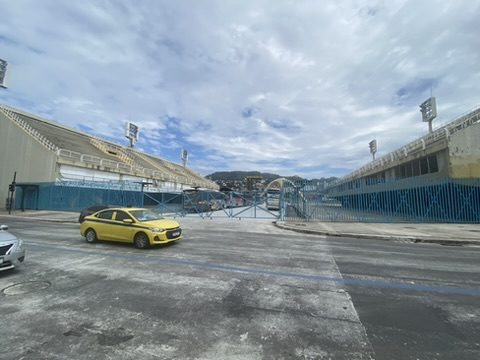
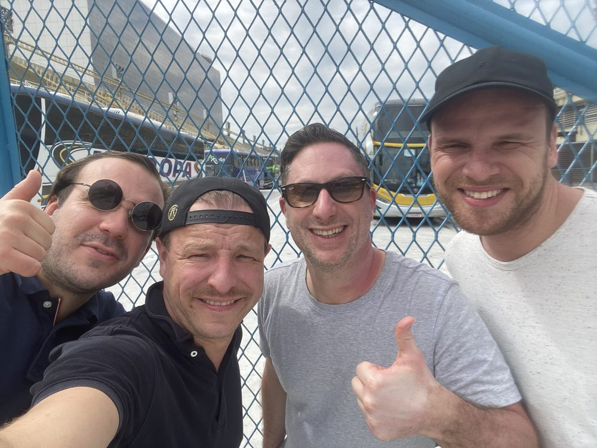
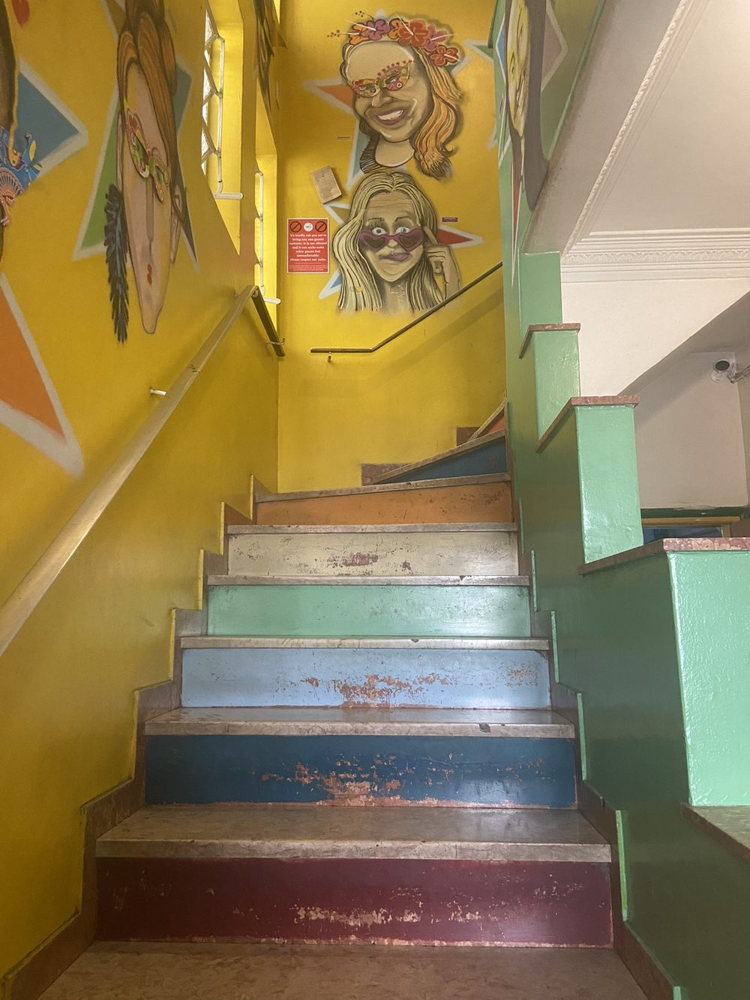
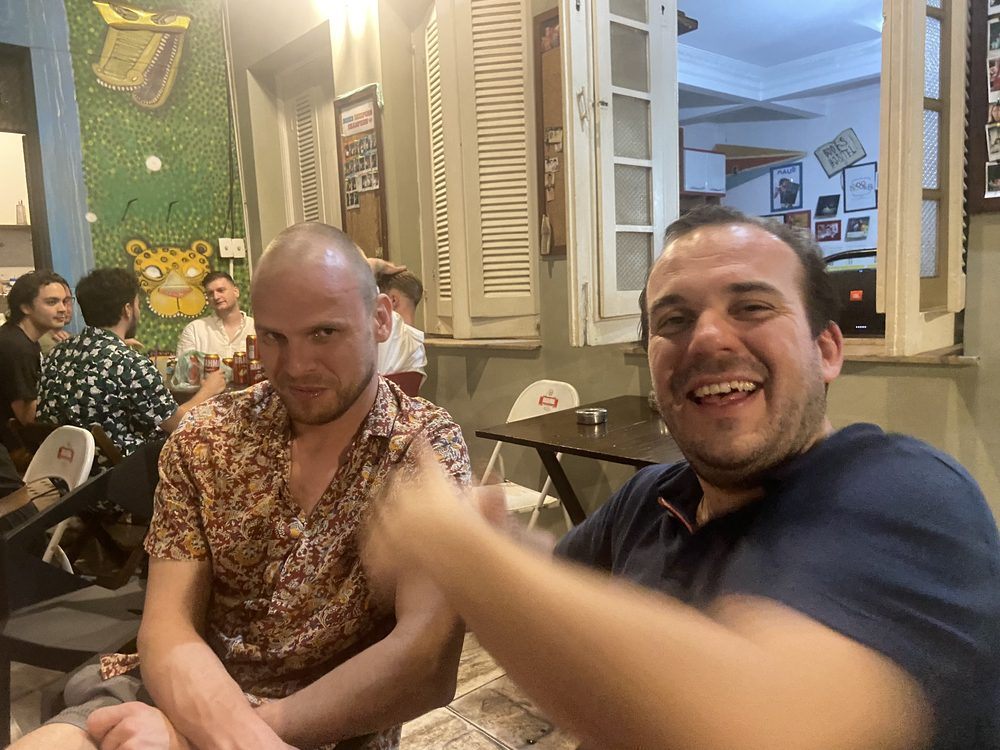